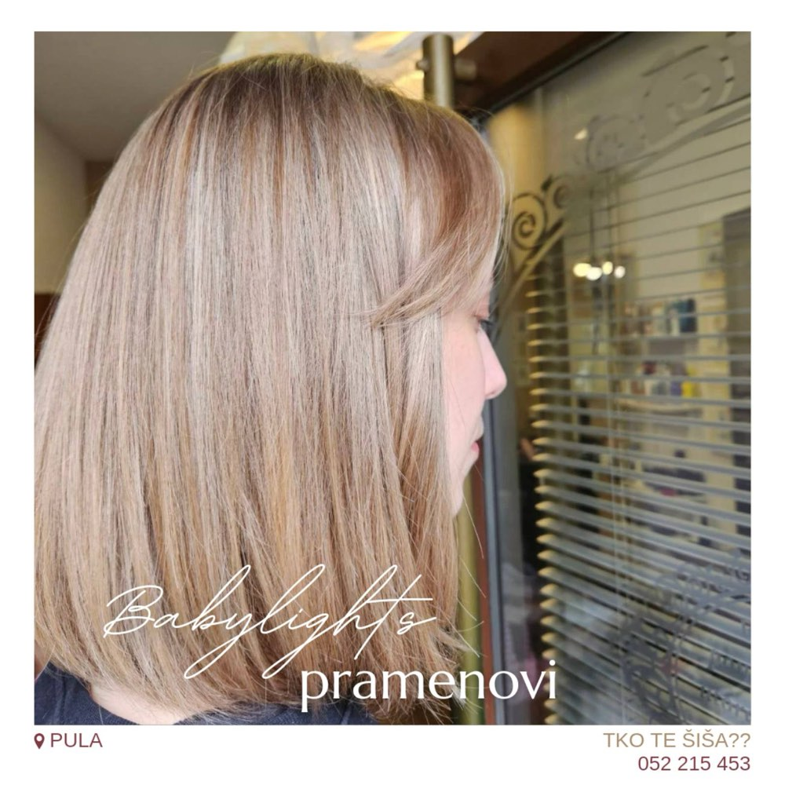
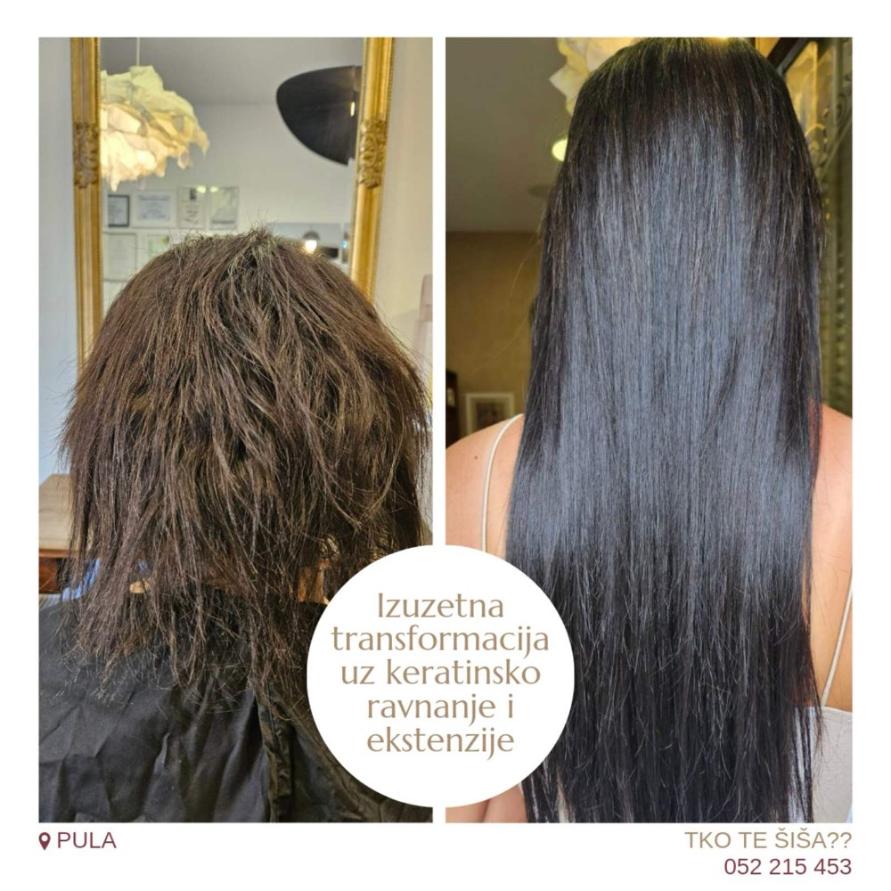

01
Šišanje i styling
Ravni bob, slojevi, osvježenje vrhova ili potpuna promjena. Nakon šišanja kosu oblikujemo onako kako je želite nositi: ravno ili u valovima.
- Žensko šišanje
- Fen: ravno ili valovi
- Naglašavanje prirodnih kovrča

[ Usluge — Tko te šiša?? ]
Šest stvari koje radimo. Za svaku vrijedi isto: prvo pogledamo kosu i razgovaramo, onda predlažemo. Za cijenu nas pitajte pri narudžbi: ovisi o duljini i stanju kose.
01
Ravni bob, slojevi, osvježenje vrhova ili potpuna promjena. Nakon šišanja kosu oblikujemo onako kako je želite nositi: ravno ili u valovima.
02
Od prirodnog balayagea i finih babylights pramenova do hrabrih bakrenih, rozih i koraljnih tonova. Kod osvježavanja boje prekrivamo i sijede, a dužine njegujemo da boja zadrži sjaj.

03
Za kosu koja se kovrča, pjeni ili se teško raščešljava. Keratinsko ravnanje može se kombinirati s ekstenzijama, kao kod klijentice koja je godinama dolazila na keratin i ravne ekstenzije.

04
Ugrađujemo ekstenzije od 100 % prirodne kose. Svaka ugradnja počinje konzultacijama, a radimo isključivo s ekstenzijama koje sami pažljivo biramo.
Ekstenzije naručene online ne preporučujemo: iskustvo nam kaže da se spojevi ne ponašaju kako bi trebali, a skidanje traje i dvostruko dulje.

05
Punđe, pletenice, uvojci i valovi za vjenčanja, maturalne zabave i proslave. Javite se na vrijeme da dogovorimo termin.

06
Kad kosa počne obilnije ispadati, napravimo jednostavan test u salonu: pramen odvojimo i ispušemo fenom, pa bolje vidimo što se događa među duljim vlasima. Nakon ljeta, sunca, soli i klora kosa je grublja i suša, pa joj treba ciljana njega, a ne samo još jedna maska.